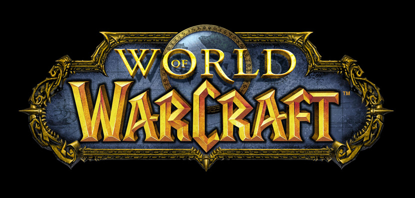
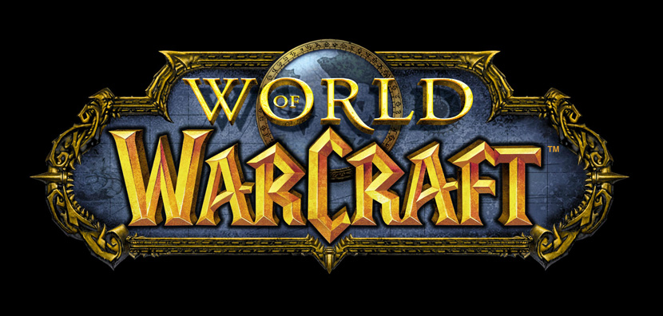

Server Information
Duskwood is a blizzlike (1x XP) vanilla server with limited custom features, such as PlayerBots and BattleBots.
Our server runs on a dedicated Linux machine based on vMaNGOS.
The XP and profession rates are set to 3x, and every character can learn all professions.
All raids are unlocked, and attunements are removed.
PlayerBots are designed for questing, leveling, dungeons, raids, and battlegrounds.
AI companions will adjust their level to yours and automatically equip preset gear according to their level.
You can spawn PlayerBots from levels 1-60 using commands or our addon.
Once you reach level 60, you will spawn BiS T3 Bots in raids and Pre-BiS Bots in dungeons and the open world.
BattleBots are smart AI companions that play like regular players, buffing, healing, fighting, completing objectives, capping flags, and taking and defending bases in battlegrounds.
Cross-faction chat, party, and guilds are enabled and you will learn all flight paths once you create a character.
The auction house is always stocked with items at a fair price that won't affect the server economy and mail delivery delay is reduced to 5 minutes instead of 60.
If you want to twink, you can simply lock and unlock your XP at the NPC "Twinker," located in Stormwind and Orgrimmar.
Our main goal is to have fun while playing safely!
Download our PCP (PartyBot Command Panel) addon for easy access here.
A list of player commands can be found here.
Have fun!
 
